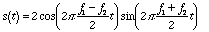
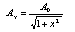
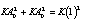
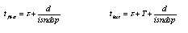

Introduction
The present chapter discusses processing techniques for the dynamic shaping of spectral components using a bank of time-varying band-pass filters. This is the result of the combination and subsequent formal development of two processes originally devised by J. C. Risset. The first type of process consists of the addition of signals with fundamentals which are slightly detuned in relation to each other, which results in pulsating harmonics originating from difference tones (Dodge and Jerse, 1985:101-2). This technique was used to generate some of the sound material of Inharmonique (Risset, 1977). The second type consists of a subtractive method which uses resonant filters tuned to specific pitches to filter natural sounds (Risset, 1991: 32). These were used in Sud (Risset, 1985).
At first sight, the relationship
between the processes above may appear to be purely phenomenological,
based on the fact that in both cases one hears pulsating harmonics.
However, it will be shown below that both are realizations of
the same mathematical principle. This relationship will prove
useful as a basis from which a generalized process - derived from
the subtractive approach in order to obtain independent control
of the various parameters of each pulsating stream - may be devised.
Subtractive synthesis offers an additional advantage which contributes
to spectral sophistication and variety: the pulsating streams
may retain the gestural characteristics of the sound source, thus
creating a ‘shadow’ or ‘ghost’ of the original
input. Because of this fact, a relatively simple Csound implementation
is used to produce articulated morphologies resulting from the
input source with spectral characteristics shaped by a filter
bank. The number of filters is determined by the requirements
of a particular process. Finally, the modular nature of this technique
makes it ideal for use in real time, in view of the possibilities
opened by the development of Extended Csound.
We will begin by establishing the mathematical premises for the additive case, based on the difference tones which result from adding of two sinusoidals.
If f1 and f2
are the frequencies of two sinewaves, addition will produce the
following signal
(1)
Applying the trigonometric identity
for the sum of two sines, we obtain
(2)
If the (f1 -
f2)/2 is below the auditory range (< ca.
20 Hz) , equation (2) will describe a sine of frequency (f1
+ f2)/2 pulsating at a rate determined by half
the difference of these frequencies. The shape of each pulsation
is that of a cosine. Its period is inversely proportional to its
frequency, therefore, since a cosine period contains two peaks,
a pulsation will last
(3)
Figure 1 shows a waveform resulting
from adding sinewaves of 100 Hz and 108 Hz. This produces a 104
Hz cosine pulsating 8 times in one second (8 Hz). Each pulsation
lasts 0.125 seconds.
Figure 1 Pulsations produced by addition of 100 Hz and
108 Hz sinewaves
Careful choice of frequencies
allows control over the duration of the envelope. If the difference
f1 - f2 is very small, a pulsation
will last several seconds and the detuning of the audible frequency
will be negligible. For example. 100 Hz and 100.04 Hz will produce
an envelope with pulsations lasting 20 seconds each and an audible
sinewave of 100.02 Hz; therefore, the latter is only detuned by
0.02%. This is well below the just noticeable difference (jnd)
for human hearing, which ranges from 3% at 100 Hz to 0.5% at 2000
Hz (Dodge and Jerse, 1985: 36).
The case of two sinusoidals may
now be extended to more complex signals by addition of harmonics.
If we add a second harmonic to each of the sinusoidals above (2f1
and 2f2), we will obtain the following difference
tones:
(f1 + f2)/2
and (f1 - f2)/2 from the interaction
of f1 and f2.
(2f1 + 2f2)/2 and (2f1
- 2f2)/2 = f1 - f2
from the interaction of 2f1 and 2f2.
(f1 + 2f2)/2 and (f1
- 2f2)/2 from the interaction of f1
and 2f2.
(2f1 + f2)/2 and (2f1
- f2)/2 from the interaction of 2f1
and f2.
Assuming that f1
and f2 are in the auditory range and that f1
- f2 is very small, the last two combinations
will produce two frequencies which are both in the auditory range
- roughly f1 (~ f2) and 1.5f1
(~ 1.5f2)1. This will be perceived
as a modulated signal of constant amplitude. On the other hand,
the first two terms will produce pulsating patterns. Furthermore,
the second harmonic combination will pulsate at a rate f1
- f2 which is twice as fast than that of the
combination of fundamentals, given by (f1 -
f2)/2. This means that peak amplitudes will
be reached at different moments: when the fundamentals are loud,
the pulsations of the second harmonics will not be heard and vice
versa. This is illustrated in figure 2.
The overall result of the combination
above will be a drone - resulting from the interaction of first
and second harmonics - and pulsations of pure sinusoidals resulting
from the interaction of harmonics of the same order (first with
first and second with second). For example, the interactions of
signals with fundamentals of 100 Hz and 100.04 Hz and two harmonics
will produce the following:
100.02 Hz sinusoidal with a 20
second envelope (pulsation).
200.04 Hz sinusoidal with a 10 second envelope (pulsation).
150.02 Hz modulated by 50.02 Hz (drone).
150.01 Hz modulated by 49.98 Hz (drone).
Figure 2
Pulsations produced by harmonics of the same order. (A) f1
and f2. (B) 2f1 and 2f2.
It is now possible to generalize
this process to m signals with n harmonics and fundamentals
which are very close to each other:
The total number of possible pairs
given a total of m signals is
therefore, the total number of
different pulsations for m signals with n harmonics
is
(4)
Implementation of the additive
case requires a simple oscillator with an envelope. The oscillator
is invoked in the score using an instrument statement. The complexity
of the waveform is determined by a score function table generated
with GEN10, which produces harmonic spectra. The orchestra MB1.ORC
consists of the following instrument and is similar to the realization
of Risset’s original instrument.
instr 1
;-----------------------------------;BLOCK
INITIALIZATION
idur = p3 ;duration
iamp = p4 ;amplitude
ifreq = p5 ;frequency
iatt = p6 ;attack
idec = p7 ;decay
ifunc = p8 ;function table
;--------------------------------------------------
kenv linen iamp,iatt,idur,idec ; envelope
aout oscili kenv,ifreq,ifunc ; oscillator
out aout
endin
The duration, amplitude, fundamental, attack, decay and function table of the generated signal are given by parameters p3 to p8, stored respectively in variables idur, iamp, ifreq, iatt, idec and ifunc. The envelope is generated with a linen statement and the oscillator is realized using OSCILI.
The score MB1.SCO performs addition
of 11 signals with 20 harmonics each. The fundamentals are spaced
in steps of 0.025 Hz above and below 70 Hz, resulting in the following
frequencies: 69.875, 69.9, 69.925, 69.95, 69.975, 70, 70.025,
70.05, 70.075, 70.1 and 70.125 Hz. Replacing 0.025 Hz (= f1
- f2) in equation 3, it is possible
to obtain the longest pulsation period, which is 40 seconds. The
generating function for a waveform with 20 harmonics is
f1 0 8192 10 1 1 1 1 1 1 1 1 1 1 1
1 1 1 1 1 1 1 1 1
A single oscillator requires an
i1 statement. For example, the 70 Hz oscillator is realized
as follows:
; p3 p4 p5 p6 p7 p8
;instr start dur amp fund attack decay function
i1 0 25 3000 70 0.1 3.5 1
It should be noted that the function
table f1 consists of harmonics of equal amplitudes. Using different
function tables one may emphasize harmonic regions, creating formants.
For example, MB2.ORC and MB2.SCO employ an instrument identical
to instr1 in order to synthesize the same number of signals
with the same fundamentals used in example 1; however, in this
case, higher harmonics are emphasized by means of the following
function table.
f1 0 8192 10 .05 .1 .15 .2 .25 .3
.35 .4 .45 .5 .55 .6 .65 .7 .75 .8 .85 .9 .95 1
We will now proceed to model the
same type of pulsating harmonics using a subtractive synthesis
representation
In order to deduce the subtractive model, it may be useful to examine the sound produced with MB1.SCO. The signals may be arranged according to their fundamentals as follows:
70.125 Hz = 70 + 0.125 = 70 + 5 x
0.025
70.1 Hz = 70 + 0.1 = 70 + 4 x 0.025
70.075 Hz = 70 + 0.075 = 70 + 3 x 0.025
70.05 Hz = 70 + 0.05 = 70 + 2 x 0.025
70.025 Hz = 70 + 0.025 = 70 + 1 x 0.025
70 Hz
69.975 Hz = 70 - 0.025 = 70 - 1 x 0.025
69.95 Hz = 70 - 0.05 = 70 - 2 x 0.025
69.925 Hz = 70 - 0.075 = 70 - 3 x 0.025
69.9 Hz = 70 - 0.1 = 70 - 4 x 0.025
69.875 Hz = 70 - 0.125 = 70 - 5 x 0.025
This may now be generalized for
any number of signals with fundamentals above and below a frequency
f with differences which are multiples of a step f.
f + n x f, ... f + 2 x f, f + 1 x f, f, f - 1 x f, f - 2 x f, ... f - n x f
Adding only the fundamentals of
the signals produces an output described by the following equation
(5)
Applying the trigonometric identity
for the sum of two sines to every term in (5) we obtain
(6)
Equation (6) represents a sinewave
of frequency f which is modulated by a sum of cosines with
frequencies f, 2 f,
... n fHz - indicated by the expression in square
brackets - and a constant. If f is very
small so that n fis below the auditory
range - (e.g. 0.025 Hz in the example above) the effect of the
cosine sum is that of an envelope.
In a similar fashion, adding second
harmonics will produce the expression
(7)
which represents the second harmonic of f multiplied by an envelope of the same shape and a period which is half of the duration of the period resulting from addition of the fundamentals.
Finally, generalizing for the
addition of harmonics of order j, we obtain
(8)
which represents the jth
harmonic of f , multiplied an envelope which has the same
shape and 1/jth of the fundamental period.
The overall output consists of
the sum of terms oj(t)
(9)
Equation (9) represents a set
of sinewaves, each with an envelope given by the expression in
square brackets. The sum of cosines contributes to the pulsations
while the constant contributes to the drone.
The waveform in equation (9) may be realized by means of a filter bank in which the gain of each filter is a function of time. The source for this process must be rich in harmonics; therefore, the present implementation uses a train of pulses which contains harmonics within the band-pass of the filters. Since the fundamental of a train of pulses determines the spectral spacing of the harmonics, this requisite may be met using a fundamental frequency which is equal or less than the desired spacing between harmonics.
The envelope of each filter may
be generated in the score using GEN9, which represents a sum of
sinusoidals with any harmonic ratio, amplitude and phase. Setting
the phase to 90o produces cosines; setting the frequency
ratio to 0 produces a constant. For example, the following function
will produce an envelope resulting from adding 3 harmonics:
;# start size GEN9 1 +cos(2_ ft)+cos(2_ 2 f t)+cos(2_ 3 f t)
f1 0 2048 9 0 1 90 1 2 90 2 2 90 3 2 90
The following instrument, included
in MB3.ORC, implements a single time-varying filter with a train
of pulses as input.
instr 3
;-----------------------------;INITIALIZATION BLOCK
idur = p3 ;duration iampf = p4 ;scaling amplitude factor
iatt = p5 ;overall attack
idec = p6 ;overall decay
itpamp = 20000 ;pulse amplitude
itpfreq = p7 ;pulse fundamental
itpharm = p8 ;pulse number of harmonics
itpfunc = p9 ;pulse function table
ipeamp = 1.00 ;pulsation normalized amplitude
ipefreq = p10 ;pulsation frequency
ipefunc = p11 ;pulsation envelope function table
icfreq = p12 ;filter center frequency
ibw = p13 ;filter bandwidth
iampbal = 1 ;filter power balancing
;----------------------------------------------------
kpenv oscil ipeamp,ipefreq,ipefunc ;pulsation envelope
kenv linen iampf,iatt,idur,idec ;overall envelope
kenv = kenv*kpenv ;multiply envelopes
ain buzz itpamp,itpfreq,itpharm,itpfunc ;train of pulses
afilt reson ain,icfreq,ibw,iampbal ;filter
out kenv*afilt ;output
endin
The center frequency and bandwidth
are given by p12 and p13 and stored in icfreq
and ibw. The variable iampbal indicates the type
of scaling used in the filter: a value of 1 scales the peak amplitude
of the output so that it matches the peak amplitude of the input.
This is not always enough, because RESON assumes that all frequencies
are physically present, which is only true in the case of white
noise. Therefore, the orchestra contains an additional scaling
factor controlled by p4 and stored in iampf. The
actual value of iampf depends on the spectral content of
the input and the filter frequency and bandwidth, requiring some
experimentation and fine tuning. The overall duration, attack
and decay of the output are given by p3, p5 and
p6, and stored respectively in variables idur, iatt
and idec. These produce a LINEN envelope with amplitude
determined by iampf. The filter envelope is produced with
OSCIL, creating the control signal kpenv, which is subsequently
multiplied by the output of the LINEN statement (kenv)
in order to avoid clicks. Its amplitude is normalized to 1.00
and given by ipeamp. The pulsation frequency (number of
pulsations per second) and function table number are stored in
ipefreq and ipefunc. The former is given by p10;
the latter by p11.
The train of pulses is generated using a BUZZ statement with itpamp, itpfreq, itpharm and itpfunc storing the pulse amplitude (set arbitrarily to an amplitude of 20000), fundamental frequency (p7), number of harmonics (p8) and the function table (p9). Finally, the output of BUZZ, ain, is fed to a RESON band-pass filter, with center frequency given by p12 and stored in icfreq, and bandwidth given by p13 and stored in ibw. The output of the filter is multiplied by the overall envelope.
The score MB3.SCO implements a bank of 15 filters (each filter is represented by an instrument statement) with center frequencies ranging from 100 Hz to 1500 Hz in steps of 100 Hz. The bandwidth is always 1 Hz. The envelope of each filter is implemented in function 4, which is generated with GEN9 and corresponds to equation (8), when n=15.
f4 0 2048 9 0 1 90 1 2 90 2 2 90 3
2 90 4 2 90 5 2 90 6 2 90 7 2 90 8 2 90 9 2 90 10 2 90 11 2 90
12 2 90 13 2 90 14 2 90 15 2 90
It should be noticed that the
number of pulsations per second, determined by the frequency of
the filter envelope, becomes faster for higher frequencies - ranging
from 0.03 Hz (Tp = 33.33 sec.) to 0.45 Hz (Tp
= 2.22 sec.)
The generating function for the
train of pulses is a sinewave, implemented in function 3.
f3 0 8192 10 1
Each filter in the bank is invoked
by means of an i3 statement. For example, the statement
below invokes a filter which starts processing a train of pulses
at time 0 and lasts 25 beats. Its center frequency (p12)
is 100 Hz and the bandwidth (p13) is 1 Hz. Its output is
shaped with an envelope produced at a rate (p10) of 0.03
Hz with its shape determined by function 4 (p11).
; p3 p4 p5 p6 p7 p8 p9 p10 p11 p12
p13
;----------------------------------------------------------------
i3 0 25 25 0.1 3.5 10 250 3 0.03 4 100 1
The subtractive method offers
possibilities which would otherwise be restricted by an additive
procedure. While the latter depends on manipulation of sinewaves
with specific relations between their frequencies, the former
only requires the existence of the desired output components in
the source. The actual spectrum of the output and characteristics
of the pulsations may be determined at will by setting the appropriate
filter and envelope parameters. We will now proceed to generalize
the instrument described in the previous section in order to achieve
more versatile and sophisticated processes.
In the first place, it is possible
to take advantage of the morphologies of sounds derived from natural
sources. In order to implement an instrument which filters an
existing set of samples, it is possible to replace the BUZZ generator
in MB3.ORC with the Csound statement SOUNDIN. The latter requires
a soundfile code, which is either the name of the soundfile containing
samples or, alternatively, a three digit number nnn, as
long as the name of the soundfile is soundin.nnn. SOUNDIN
also allows an optional parameter which indicates how many seconds
to skip from the beginning of the soundfile. Therefore, the following
line may be used to replace the buzz generator
ain soundin isfcode,isfskip
where isfcode is the soundfile
nnn code and isfskip is the number of seconds skipped.
The center frequency and bandwidth
of the filters may become a function of time. Filters with time-varying
center frequency may be implemented specifying its maximum and
minimum values, as well as a function table which describes the
time dependency of the fluctuations between maximum and minimum.
For example, if the parameters p13, p14 represent
respectively the minimum and maximum frequencies, the maximum
frequency fluctuation will be given by
icffluc = p14-p13
Assuming that the function table
number is stored in icffunc, the time-varying fluctuation
may be realized with an OSCIL1 statement, which sweeps through
icffunc exactly one time throughout the duration of the
sound.
kcf oscil1 0,icffluc,idur,icffunc
Also, if the minimum frequency
is stored in icfmin, we may add the fluctuation to this
variable to obtain the time-varying center frequency.
kcf = icfmin+kcf
The bandwidth may be expressed
as a percentage of the center frequency, which allows a simpler
implementation of filter banks with constant Q ( f/f
= constant). The following set of statements is similar to the
set used in the case of the center frequency, and produces a time-varying
bandwidth.
ibwmin = p16 ;minimum bandwidth as
% of center frequency
ibwfluc = p17-p16 ;filter bandwidth fluctuation (% of center freq)
ibwfunc= p18 ;filter bandwidth function
:
:
kbw oscil1 0,ibwfluc,idur,ibwfunc ;filter bandwidth
kbw = (ibwmin+kbw)*kcf/100.0
Since the envelope of the pulsation
is generated independently from the filter, it is possible to
substitute the function in equation (8) by any other shape, specified
by a function table in the score. Also, in contrast to the additive
case, the frequency of the pulsations (number of pulsations per
second) is not dependent on other parameters and may become a
function of time. The following lines are used to produce pulsations
with any envelope and time-varying frequency.
ipfmin = p9 ;minimum pulsation frequency
ipffluc = p10-p9 ;pulsation frequency fluctuation
ipffunc = p11 ;pulsation frequency fluctuation function
ipefunc = p12 ;pulsation envelope function
:
:
kpfreq oscil1 0,ipffluc,idur,ipffunc ;pulsation frequency variation
kpfreq = ipfmin+kpfreq
kpenv oscil ipeamp,kpfreq,ipefunc ;pulsation envelope
MB4.ORC consists of an instrument which filters a soundfile, implementing a filter with time-varying frequency and bandwidth. It also allows configuration of the pulsation envelope and frequency. The score MB4.SCO uses this orchestra in order to process a sampled sound stored in soundfile soundin.1 with a bank comprising 11 filters. The center frequency and bandwidth of each filter are time-varying, fluctuating according to functions 7 and 8.
f7 0 4096 7 0 1024 1 1024 0.3 1024
0.8 1024 0.4
f8 0 4096 7 1 1024 0 1024 0.3 1024 0.4 1024 0
The pulsation envelope frequency fluctuates according to function 5 and its envelope is defined by function 6.
f5 0 4096 7 1 4096 0
f6 0 4096 19 1 1 270 1
The frequencies of the filters in the score have inharmonic ratios. Each of the filters is invoked using an instrument statement. For example, the following is a filter with center frequency between 2000 Hz (p13) and 2020 Hz (p14), bandwidth is between 0.1% (p16) and 0.3% (p17) of the instantaneous center frequency and pulsations which oscillate with a minimum frequency (p9) of 0.11 Hz and a maximum (p10) of 0.12 Hz.
; p3 p4 p5 p6 p7 p8 p9 p10 p11 p12
p13 p14 p15 p16 p17 p18
;----------------------------------------------------------------------
i4 0 8.547 70 .001 .005 1 0 .11 .12 5 6 2000 2020 7 .1 .3 8
The cases above used an amplitude
factor to compensate for power loss due to filtering. It is possible
to use an alternative method provided by BALANCE. This statement
compares the root mean square (RMS)2 of the output
with that of a reference signal; usually the input source. The
amplitude factor may still be kept in order to fine-tune the final
gain. MB5.ORC contains an instrument which is a modified version
of MB4.ORC carried out by replacing the output statement with
the following lines
aout balance afilt,ain ;balance
out kenv*aout ;output
Although BALANCE does not affect
the frequency content of the output, in some cases, the temporal
characteristics of the latter may be affected so drastically that
it begins to resemble the source. This is particularly noticeable
in sources with fast transients or quick changing spectra. The
effects of balancing an input with fast transients may be appreciated
by comparing the sounds generated with MB4.ORC/MB4.SCO with those
obtained with MB5.ORC/MB5.SCO (both use soundin.1 as their
input). The only difference between the scores consists of the
use of faster pulsation frequencies in MB5.SCO: these are in the
region of 5 Hz to 7.6 Hz, whereas MB4.SCO uses frequencies ranging
from 0.11 Hz to 1.32 Hz.
A further enhancement of the process consists of spatialization of the output of each individual filter.
The panning algorithm employed here has been used in various pieces of software, notably in the PAN program from the Composers’ Desktop Project Groucho Sound Processing Programs - originally produced by Bentley (Atkins, Bentley, Endrich, Fischman, Malham, Orton and Wishart 1987; Dobson and Endrich 1994). It assumes a stereo image and uses normalized values to represent panning positions. A value of 1 represents the position of the right speaker, -1 that of the left speaker and 0 is the center. Panning values which are larger than 1 or smaller than -1 are respectively besides the right and left speakers. As a result, the speaker distance is normalized to a value of 2. The listener is located along a line perpendicular to the center and at a distance which is half of the speakers’ separation, equivalent to a normalized value of 1. Figure 3 shows a diagram representing the various parameters.
Lets assume that the amplitude
of a signal in the center (pan = 0) is A0. At
this point, the distance from the listener is 1. When the position
is displaced by x the distance from the listener becomes , and the amplitude, Ax, is given
by the inverse square law
therefore
 (10)
Figure 3
In order
to normalize the maximum value of the amplitude to 1, we may remember
that the energy of a signal is proportional to the square of the
amplitude
Assuming no losses, the law of
conservation states that the total energy remains constant. Therefore,
the sum of energies produced by each speaker must remain constant.
(11)
When the signal is in the middle,
both speakers produce the same amount of energy, due to the amplitude
A0. Making ATOTAL=1 and replacing
in equation (11), we have

therefore
(12)
The distribution between the speakers
depends on the position with respect to the center. If the pan
value is positive, the signal will be situated at a distance x
to the right of the center, otherwise, the position will be to
the left of the center. Therefore, if x is the pan value,
the relative weight of each speaker will be
where AxL and
AxR are, respectively, the left and right speaker
amplitudes. As expected, hen x is positive we have AxR
> AxL and when it is negative AxL
> AxR. Using this relation and equations
(10) and (12), we obtain
(13)
Similar calculations provide the
formulas for positions beside the left speaker
(x<-1)
(14)
and besides the right speaker
(x>1)
(15)
Equations (13) to (15) may be
implemented in a Csound orchestra as follows:
imaxpan = p19 ;maximum pan ipfreq
= p20 ;pan frequency
ipanfunc= p21 ;pan function table
isr2 = sqrt(2.0) ;square root of 2
isr2b2 = isr2/2.0 ;half of square root of 2
kpan oscili imaxpan,ipfreq,ipanfunc ;panning trajectory
if kpan<-1 kgoto beyondl ;pan beyond left speaker?
if kpan>1 kgoto beyondr ;pan beyond right speaker?
;-------------------------------------;pan between speakers, eqs.
(13)
ktemp = sqrt(1+kpan*kpan)
kpleft = isr2b2*(1-kpan)/ktemp
kpright = isr2b2*(1+kpan)/ktemp
kgoto donepan
beyondl: ;pan beyond left speaker, eqs. (14)
kpleft = 2.0/(1+kpan*kpan)
kpright = 0
kgoto donepan
beyondr: ;pan beyond right speaker, eqs. (15)
kpleft = 0
kpright = 2.0/(1+kpan*kpan)
donepan:
The spatial trajectory is implemented
using an oscillator with output kpan, which is driven by
a function indicating its shape (ipanfunc=p21).
The oscillator has a maximum amplitude given by p19 and
stored in imaxpan, corresponding to the maximum panning
value. The panning trajectory may be repeated several times throughout
the duration of the event depending on the value of the panning
frequency, given by p20 and stored in ipanfreq (in
order to obtain only one trajectory throughout the event, ipanfreq
must be 1/idur, where idur is the duration of the
event). The IF ... KGOTO statements test the value of kpan
and determine which set of equations should be applied. The variables
isr2 and isr2b2 respectively store the square root
of two and half of this value for use with equation (13) to (15).
In order to output stereo, the
header variable nchnls must be set to 2. In addition, the
output line should use OUTS instead of OUT.
outs kenv*kpleft*aout,kenv*kpright*aout
The algorithm used here is based
on that shown in the Csound manual (Vercoe, 1986), which employs
a delay line in order to implement Doppler shift according to
the following principle: if the signal is at a distance d
from the listener, the time it takes a sample to reach the listener
is
where isndsp is the speed
of sound in air. Now, if the period of the signal is T
(the frequency is f = 1/T) and the first sample
of a cycle occurs at time ™ , the last sample will occur
at time ™ +T. If the signal is stationary, the first
and last samples will respectively reach the listener at times

and the frequency the listener
perceives is
However, if the source moves at
a speed v, the distance from the listener when the last
sample in the cycle occurs will be d+vT, which means
that the last sample will arrive at time
therefore, the frequency perceived
by the listener will be
(16)
If the signal approaches the listener, v will be negative and, from equation (16), the resulting frequency will be higher than f. Similarly, if the signal departs from the listener, v will be positive and the resulting frequency will be lower than f.
The time it takes a sample to reach the listener may be simulated using a delay line. Also, since the distance from the listener to the line of the speakers is constant, it is only necessary to account for movement along the latter, which is determined by x. If the signal is in the middle position (x=0), the delay should be 0; any other position should generate a delay which is proportional to the absolute value of x. When the signal moves, x changes and, as a result, the delay changes in proportion to the absolute value of x, producing a smooth change in frequency.
The relationship between the delay
value and panning may be found as follows: if ihspeakd
is the distance between the speakers and the center (half of the
speaker distance), and isndsp the speed of sound in air,
the time it takes a sample to travel from one speaker to the center
is
This happens when the absolute
value of x is 1. Any other value of x represents
a scaling of the distance from the speaker to the center, therefore,
the delay is also scaled by x and we have
(17)
Finally, if x changes according
to a control signal such as kpan, the delay time kpdel
will change in according to
(18)
A Csound implementation of the
Doppler delay line is listed below.
ihspeakd= 5.0 ;half of the distance
between speakers (m)
isndsp = 331.45 ;sound speed in air (m/sec)
impandel= imaxpan*ihspeakd/isndsp ;maximum pan delay
kpdel = kpan*ihspeakd/isndsp ;find pan delay
adump delayr impandel ;set maximum
aout deltapi abs(kpdel) ;tap delay according to pan
delayw afilt ;delay signal
The maximum delay is directly proportional to the maximum panning value; therefore, impandel is calculated by direct replacement of imaxpan in equation (17). The time-varying delay is calculated using equation (18). Next, a delay line with a maximum delay time equal to impandel is opened using DELAYR. This line is connected to aout using the statement DELTAPI, which sends each sample after a duration equal to the absolute value of kpdel. Finally, the output of the filter, afilt is fed to the delay line.
MB6.ORC consists of an instrument
which implements spatial articulation and Doppler shift using
the techniques discussed above. MB6.SCO, processes the soundfile
soundin.1 with the same filters and envelope parameters
used in MB4.SCO. In addition parameters p19, p20
and p21 determine respectively the maximum pan value, pan
frequency (number of repetitions of the panning trajectory) and
panning function. All the filter outputs are panned with function
table 9; however, the frequency of the panning oscillator is different
for each filter.
Instruments 4 and 5 may be extended
so that they process stereo files. In the first place, nchnls
must be set to 2 in the header. Next, the SOUNDIN statement must
have two outputs
al,ar soundin isfcode,isfskip
Each of these inputs must be filtered
and, if required, balanced
afiltl reson al,kcf,kbw,iampbal ;filter
left channel
afiltr reson ar,kcf,kbw,iampbal ;filter right channel
aball balance afiltl,al ;balance left channel
abalr balance afiltr,ar ;balance right channel
Finally, the output must use OUTS.
outs kenv*aoutl,kenv*aoutr
We saw above that carrying out
an RMS balance of the output may alter its morphology. It is therefore
possible to produce several cross-fades between balanced and the
unbalanced versions, achieving more timbral variety. A time-varying
cross-fade may be implemented using a function table which drives
a single cycle oscillator such as OSCIL1. A high value of the
function table may favor one of the states - for instance, the
balanced output - whereas a low value may favor the other. The
following lines assume that p19 determines the function
table number, which is subsequently stored in ixfunc. The
variable inenv is a normalized amplitude.
inenv = 1.00
ixfunc = p19
kxf oscil1 0,inenv,idur,ixfunc
Assuming that aball and
abalr are the stereo outputs of BALANCE and that afiltl
and afiltr are the unbalanced outputs of the filters, the
cross-fade will be generated multiplying the balanced pair by
kxf and the unbalanced pair by (1-kxf).
aoutl = kxf*aball+(1-kxf)*afiltl*iampf
aoutr = kxf*abalr+(1-kxf)*afiltr*iampf
MB7.ORC and MB7.SCO demonstrate
a cross-fade process applied to stereo input soundin.2.
Because of the nature of the input, the balanced process will
generate signals with more prominent attacks, while the unbalanced
process will resemble more the ‘thinner’ harmonics.
As a final example, a process used in the tape part of the piece The Day After..., for string quartet and tape (Fischman, 1995) will be examined. The input is the sound of a recorded airplane flying past the listener. This sound is followed by the output of a stereo process using 15 filters with center frequencies ranging from 100 Hz to 4731 Hz and bandwidth from 0.5 Hz to 3 Hz. The frequency of the pulsations is in the range of 0.1 Hz to 6.9 Hz, with a frequency fluctuation function which favors the upper range when the airplane approaches the listener. The pulsation envelope is a raised cosine bell.
The next example is the output
of a process using similar parameters, except for the shape of
the pulsation envelope, which is a short exponential trapezoid.
The resulting pulsations tend towards discrete percussive beats.
The final example consists of a passage of The Day After...,
which uses the sounds above and their transpositions.
The use of multiple time-varying filters which shape synthesized and sampled signals has been discussed in detail. The point of departure consisted of models developed by J. C. Risset for use in his compositional work. Initially, an additive model was simulated using a set of filters with constant center frequency and bandwidth. This was then realized using a subtractive model, which was extended to include time-varying center frequency and bandwidth, time-varying pulsation frequency, balanced output, spatial articulation, Doppler effect, treatment of stereo soundfiles and cross-fades between balanced and unbalanced versions.
The techniques above offer a great range of possibilities which are greatly enhanced by the fact that they take full advantage of the characteristics of the input source; different sounds fed to the same bank of filters will produce different results. Therefore, proper manipulation of the filter parameters may allow the composer to take keep interesting properties of the original source and employ these for the creation of new sonorities.
The processes described in this chapter may be developed further. For example, the panning algorithms may be extended to cope with more than one dimension. In a quadraphonic system, it is possible to use Csound’s PAN statement. If three-dimensional spatialization is required, equations (13) to (15) may also be applied to the movement between rear and front and top and bottom set of speakers using different variables to represent each dimension. It is also possible to generate depth information using two speakers: if y is the normalized distance from a sound behind the speakers to the line of the speakers, equations (13) to (15) may be modified as follows:
equations (13) become
(20)
equations (14) and (15) become
Other processes may include the use of non-linear filters, manipulation of spectral regions using Csound’s phase vocoder (PVOC) and associated statements and the application of temporal procedures using the Csound module sndwarp.
Finally, the modularity and relative
simplicity of the filter bank technique makes it ideal for real
time implementation, especially in view of the possibilities offered
by Extended Csound. It is therefore feasible to envisage the application
of a set of filters to the output of a microphone (or any other
signal) during a live performance. The parameters may be controlled
using faders, mice, joysticks, etc. via MIDI or any other protocol.
The number of filters used in real-time is directly dependent
on the processing power of the hardware and may therefore be reduced
or increased in a modular way, making the process easily adaptable
to the capabilities of a particular system.
Notes
Atkins, M., Bentley, A., Endrich, T., Fischman, R., Malham, D., Orton, R. and Wishart, T. 1987. The Composers’ Desktop Project. In S. Tipei and J. Beauchamp (eds.) Proc. Int. Computer Music Conf. San Francisco: Computer Music Association, pp. 146-50
Dobson, R. and Endrich, T. J. 1994. CDP ‘Groucho’ Sound Processing Programs. In T. J. Endrich (ed.) Composers’ Desktop Project (CDP). Professional Computer Music System User Guide, Release 2. York: CDP Ltd.
Dodge, C., Jerse, T. A. 1985. Computer Music. Synthesis, Composition and Performance. New York: Schirmer Books.
Fischman, R. 1991. Musical Applications of Digital Synthesis and Processing Techniques. Realisation using Csound and the Phase Vocoder. Unpublished addendum to DPhil composition folio. York University. UK.
Fischman, R. 1994. Sound Processing in Los Dados Eternos. In N. Osborne, P. Nelson, S. Emmerson (eds.) Contemporary Music Review. Timbre Composition in Electroacoustic Music. 10(2): 181-9. Switzerland: Harwood.
Fischman, R. 1995. The Day After. Piece for string quartet and tape.
Risset J. C. 1969. Introductory Catalogue of Computer-Synthesized Sounds. Murray Hill, N. J.: Bell Telephone Laboratories.
Risset J. C. 1977. Inharmonique. In compact disc INA C003.
Risset J. C. 1985. Sud. In compact disc INA C003.
Risset J. C. 1991. Timbre analysis by Synthesis. Representations, Imitations, and Variants for Musical Composition. In G. De Poli, A. Picciali and C. Roads (eds.) Representations of Musical Signals, pp. 7-43. Cambridge, MA: MIT Press.
Vercoe, B. 1986. Csound. A Manual for the Audio Processing System and Supporting Programs with Tutorials. Cambridge, MA: MIT Media Lab.